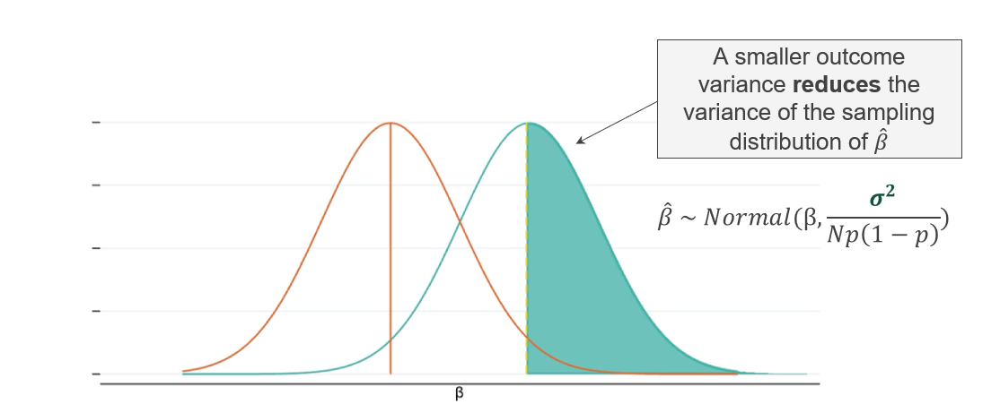

Sample and Power Calculations
Essential concepts of statistical power and sample size calculations for randomized evaluations.
- Statistical power determines the ability to detect true effects in research studies.
- Sample size directly affects the precision and reliability of estimates.
- Statistical concepts like significance levels, confidence intervals, and effect sizes are crucial for interpreting results.
What is Statistical Power?
Statistical power is the probability that a study will detect a true effect when one actually exists. Think of it as your study’s ability to avoid missing something important - like having a metal detector sensitive enough to find buried treasure.
For a practical introductory guide to power calculations, see Guide to Power Calculations.
Why Statistical Power Matters?
- Ensures studies can detect meaningful effects
- Reduces risk of false conclusions
- Strengthens confidence in research findings
- Prevents wastage of research resources
- Avoids underpowered studies that may be inconclusive
- Guides efficient allocation of study participants
- Enables evidence-based policy decisions
- Reduces risk of dismissing effective interventions
- Helps identify truly impactful programs
- Respects participants’ time and effort
- Justifies the use of research resources
- Promotes responsible funding and implementation
Real-World Example: Improving Academic Achievement in India1
In India, a significant proportion of children age 7 to 12 were struggling with basic academic skills; 44% could not read a simple paragraph and 50% could not solve a basic subtraction problem—highlighting an urgent need for targeted support.
The Balsakhi tutoring program addressed this gap by providing two hours of daily remedial instruction in small groups of 15 to 20 students. To rigorously evaluate its impact, researchers conducted a large-scale randomized controlled trial involving 23,000 students. They assigned students to either a treatment group – receiving Balsakhi tutoring – or a control group – continuing with the regular curriculum.
📊 The Results
- Test scores improved by 0.28 standard deviations for students who received tutoring
- The large sample size gave the study high statistical power, which allowed researchers to confidently detect this meaningful effect

🔠Why This Matters: Understanding Statistical Power
This example shows why statistical power is critical in research.
Even if a program has a real, positive effect, as Balsakhi did, a study without enough power might miss it. Small or underpowered samples are more likely to produce inconclusive or misleading results.
Because this study was well-powered, it gave strong evidence that the tutoring program worked. If the sample had been smaller, the study might have wrongly concluded that there was no impact.
💡 Bottom line: Statistical power helps researchers avoid false negatives and ensures that policy decisions are based on real, reliable evidence – not just chance.
This case shows how careful study design and sufficient power can lead to actionable insights, helping shape smarter education policies in low-resource settings.2
The larger the study sample, the more likely researchers are to estimate the true treatment effect of the program.

Sample Size: Precision and Reliability
Sample Size
Sample size directly influences the ability to estimate the true treatment effect with precision and reliability:
- Smaller N: High variability, less precise and reliable estimates
- Larger N: Lower variability, more precise and reliable estimates
Why Does Sample Size Matter?
| Reason | Explanation |
|---|---|
| Statistical Power | Larger samples increase the probability of detecting true effects (higher power). |
| Confidence Intervals | Bigger samples yield narrower confidence intervals, making estimates more informative. |
| Generalizability | Adequate sample size ensures findings are more representative of the target population. |
| Minimizing Errors | Small samples are more prone to random error and outliers, which can distort results. |
How to Determine Sample Size?
| Factor | Impact on Sample Size |
|---|---|
| Expected Effect Size | Smaller effects require larger samples to detect. |
| Outcome Variance | More variable outcomes need larger samples for the same precision. |
| Significance Level (α) | Lower α (e.g., 1%) requires a larger sample than higher α (e.g., 10%). |
| Desired Power (1−κ) | Higher power (e.g., 90%) means a larger sample than lower power (e.g., 80%). |
| Study Design | Clustered or stratified designs often require larger samples due to intra-group correlation. |
Trade-offs
While larger samples improve precision, they require more resources:
- Financial: Survey costs, transport, devices
- Time: Recruitment, training, fieldwork
- Labor: Enumerators, field staff
Practical Considerations
- Minimum Detectable Effect (MDE): Decide what is the smallest effect worth detecting—this drives sample size.
- Attrition: Anticipate and adjust for expected loss of participants over time.
- Non-compliance: Plan for imperfect adherence to treatment assignment, which can reduce effective sample size.
- Ethical Balance: Avoid exposing more participants than necessary to interventions or control conditions.
Sample size/power calculations help balance statistical precision with resource constraints:
- Too small: Risk missing true treatment effects
- Too large: Waste resources unnecessarily
- Goal: Find optimal sample to detect meaningful effects reliably
Understanding Statistical Concepts
PDFs help visualize the uncertainty around the estimated treatment effect (β̂) in a study. They show how likely different values of β̂ are, assuming a true treatment effect β.

A narrower distribution of estimates (β̂) increases the chances of detecting true effects. You can achieve this by: - Increasing the sample size (N) - Assigning roughly equal numbers to treatment and control (p ≈ 0.5) - Reducing outcome variance (σ²)
If researchers repeated the same RCT many times, they wouldn’t get the exact same estimate every time. Instead, the estimated treatment effects (β̂) would follow a normal distribution:
\[ \hat{\beta} \sim \text{Normal}(\beta, \sigma^2 / [Np(1-p)]) \]
- β: True treatment effect
- σ²: Variance of the outcome
- N: Sample size
- p: Proportion assigned to treatment (e.g., 0.5)
Type I Error (α): Risk of a false positive - Usually set at 5% (α = 0.05) - This means there’s a 5% chance of incorrectly detecting an effect when there is none - A lower α reduces false positives—but increases the risk of missing real effects - Its complement (1−α) is known as the confidence level – how likely studies are to avoid a false positive - While 5% is standard, it can range from 1%-10% in research literature
To determine whether an effect is statistically significant, researchers use a hypothesis test. This is important because it helps control the risk of making a Type I error – incorrectly concluding that an effect exists when it actually does not, a “false positive.†By setting a significance level (α), researchers limit the probability of making this error and ensure findings are not due to random chance.
Assumes no effect exists, β = 0. This is the starting point for statistical testing and represents the default position that the intervention has no impact.
Proposes existence of an effect, β ≠0. Can be one-sided, β > 0 or β < 0, or two-sided, β ≠0.

Based on chosen significance level α, typically uses α = 0.05. Forms rejection regions in the distribution and uses t-distribution or z-distribution.

Calculate estimated effect size β̂ and compare to critical values. Consider confidence intervals and assess statistical significance.
Reject H₀ if β̂ exceeds critical values. Fail to reject H₀ if β̂ falls within critical bounds. Consider practical significance and report p-values and confidence intervals.

Type II Error (κ): Risk of a false negative
- κ: Probability of missing a real effect
- Power (1−κ): Probability of detecting a true effect (aim for ≥80%)
- Lower α (false positive rate) increases κ (false negative rate)
- Power and sample size are directly related: higher power needs a larger sample
Statistical Power in Practice
Statistical power is influenced by:
- Sample size (N)
- Effect size (β): how big the true impact is
- Outcome variance (σ²): how much outcomes naturally vary
Larger samples and bigger effects increase the chance of detecting something real.


Power is often shown as the overlap between two distributions:
- H₀ (Null): No effect
- H₁ (Alternative): A true effect exists
- Critical value: The cutoff for statistical significance
The less overlap between the two distributions, the higher the power.
| Scenario | Underpowered Study (<80%) | Well-Powered Study (≥80%) |
|---|---|---|
| Detection Ability | Low: true effects may be missed | High: true effects are likely to be found |
| Conclusions | Inconclusive or misleading | Clear and reliable |
| Resource Use | Wasteful: may require redoing the study | Efficient: leads to actionable findings |
An underpowered study might miss real program effects—leading to wrong conclusions and poor policy decisions.
When power is high (≥80%), studies are more likely to detect true effects and avoid false negatives.
Determinants of Power Estimation
Several key factors determine the statistical power of a study. Understanding and adjusting these determinants is crucial for effective research design:
The smallest treatment effect you aim to detect. Smaller MDEs require larger sample sizes to achieve the same power.

The total number of study participants. Larger samples increase statistical power and precision.

The variability in the outcome measure. Lower variance makes it easier to detect effects.

The proportion assigned to treatment and control groups. Power is maximized when groups are of equal size.

- When participants do not adhere to their assigned group.
- Non-compliance reduces the effective sample size and power.
- Non-compliance reduces power via a smaller effect size, or MDE (under no compliance, the estimated treatment effect collapses to zero).
- As we saw before, a smaller effect (MDE) is harder to detect (so less power).
- Increasing compliance is one of your strongest levers to increase power!

- Loss of participants during the study. Attrition reduces sample size and can bias results if not random.
- Attrition reduces power via a smaller study sample size.
- If attrition is correlated with the treatment (e.g., more likely in the control group), the estimated effect is no longer unbiased!
- You must try hard to keep your study sample! (rapport, incentives, tracking respondents, etc.)
Common Pitfalls and Solutions
- Problem: Using simple formulas for complex designs
- Solution: Account for clustering, stratification in calculations
- Problem: Assuming perfect compliance, no attrition
- Solution: Build in realistic buffers (typically 20-30%)
- Problem: Calculating power after finding null results
- Solution: Focus on confidence intervals, not post-hoc power
- Problem: Treating 80% power as sacred threshold
- Solution: Consider context—sometimes 70% or 90% is appropriate